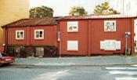

Södermalm i tid och rum. Stockholm
Folkungagatan 148Huset uppfördes strax efter 1725, sedan en tidigare byggnad på tomten brunnit ned 1723. Det brandförsäkrades som tvåvåningshus 1778. Förvärvades av staden 1883. Senast ombyggt 1968.

Huset uppfördes strax efter 1725, sedan en tidigare byggnad på tomten brunnit ned 1723. Det brandförsäkrades som tvåvåningshus 1778. Förvärvades av staden 1883. Senast ombyggt 1968.
